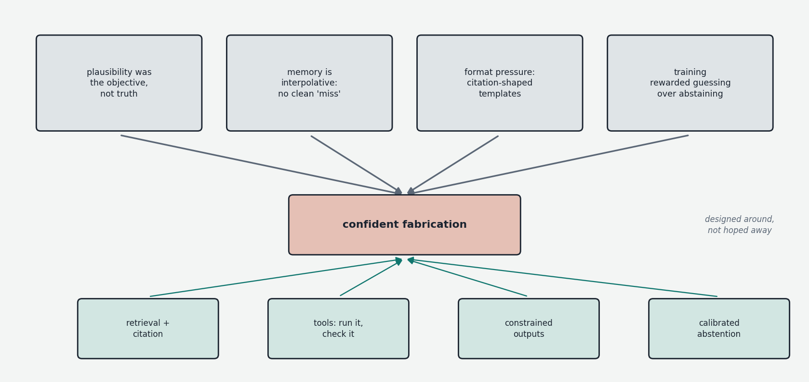
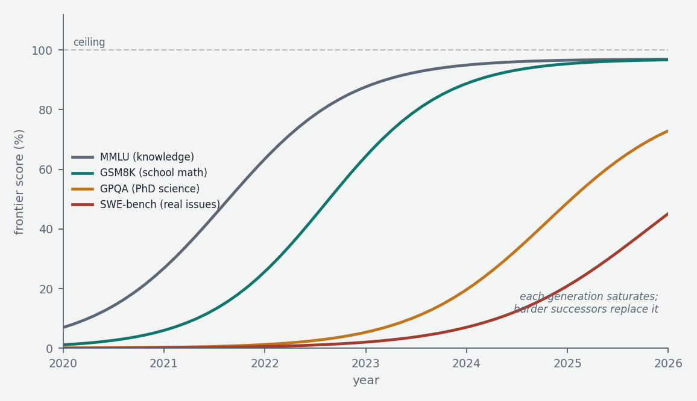

The previous chapters built the machinery; this final one is about epistemics — what these systems can actually be relied on for, why they fail the ways they fail, how capability is measured and how those measurements mislead, and how much anyone genuinely understands about what is happening inside. It is the chapter most likely to save you money and embarrassment.
In-context learning: the capability hiding in plain sight
One ability deserves explicit naming because everything practical rests on it. A model's weights are frozen after training — and yet, shown three examples of an input-output pattern in its prompt, it performs the pattern on a fourth input it has never seen. No gradient was computed; no parameter moved. This is in-context learning, and when GPT-3 demonstrated it in 2020 it was the surprise that launched the modern era: the model had, as a byproduct of next-token prediction, learned how to learn from its context. The mechanistic understanding remains partial, but interpretability work has identified concrete machinery: induction heads, pairs of attention heads (of the kind catalogued in the attention chapter) that implement "find where something like this appeared earlier, and copy what followed it" — a primitive pattern-completion algorithm that emerges reliably during training, at the same moment in-context learning ability jumps. Whatever the full story, the practical reading is that the forward pass performs something functionally like learning, with the context window as its training set — which is why prompting, few-shot examples, retrieval, and agent transcripts work at all, and why the entire applied stack of Chapter 8 can treat frozen weights as adaptable.
Hallucination: the mechanics of confident fabrication
The defining reliability failure is hallucination — fluent, confident, false output: invented citations, plausible-but-wrong API parameters, fabricated case law. It is not a bug bolted onto an otherwise truthful system; it follows directly from the machinery built up across this conversation, in four converging ways.

First, the objective. The model was trained to produce plausible continuations, and truth and plausibility usually correlate in training data — but the model optimizes the correlation's proxy, not its target. Where a true continuation and a merely plausible one diverge, nothing in next-token prediction privileges the true one. Second, the storage. The model's knowledge lives diffusely in MLP weights (the key-value memory picture) as soft statistical associations, not as a database with lookups that can fail cleanly. A query that would miss in a database instead produces, in a neural memory, a smooth blend of nearby associations — and the model continues from that blend as fluently as from a solid fact. There is no internal signal distinguishing "retrieved" from "interpolated." Third, the format trap. The structure of an answer is often more strongly determined than its content: asked for a citation, the distribution over citation-shaped text is sharp (authors, a year, a plausible journal) even when no specific true citation is strongly stored — so the model fills a confident template with confabulated specifics. Fourth, the incentives. Standard training rewards guessing: in pretraining, a hedge is rarely the actual next token; in benchmark-style post-training, a wrong guess scores the same as an abstention, so guessing strictly dominates. A 2024–25 line of work (including an influential OpenAI analysis) frames hallucination substantially as a calibration and incentive problem — models often do carry internal uncertainty signals, but training never taught them to act on those signals by abstaining. Mitigations follow from the diagnosis: retrieval with citation (move facts from weights into context, where attention is reliable — Chapter 8), tool-based verification (run the code, check the source), constrained tasks over open recall, sampling-consistency checks (a fact stable across resamples is likelier stored than interpolated), and post-training that rewards calibrated refusal. Reduced steadily, version over version; eliminated, no — and any pipeline consuming model output should be designed on that assumption.
Evaluation: benchmarks and their pathologies
Measuring capability sounds straightforward and is anything but. The canonical academic benchmarks each cover a slice: MMLU (broad multiple-choice knowledge across 57 subjects), GSM8K and MATH (grade-school and competition mathematics), HumanEval (does generated code pass unit tests), and harder successors — GPQA (graduate-level science questions designed to be "Google-proof"), SWE-bench (resolve real GitHub issues in real repositories), agentic and long-horizon task suites — created as each prior generation saturated, with frontier models now clustering near the ceiling of everything in the older tier.

Three pathologies corrupt the numbers. Contamination: benchmarks are text on the internet, pretraining ingests the internet, and despite the decontamination filtering described in Chapter 2, paraphrases and quotations leak through — so a score may measure recall of the test rather than ability at the task. (A standard tell: models scoring markedly worse on a benchmark's renamed-variables or freshly-written variants than on the original.) Goodharting: once a benchmark drives marketing, it gets optimized — including by selecting post-training data resembling it — and ceases to measure what it measured. And construct mismatch: multiple-choice accuracy on exam questions simply isn't the ability most users need, which is closer to "reliably useful across messy, underspecified, multi-turn real work."
The complementary instrument is human preference at scale: LMArena (formerly Chatbot Arena) shows users two anonymous model responses, collects votes, and computes Elo-style ratings — contamination-proof and grounded in real queries, but measuring what people like, which is not what is correct. Arena-style ratings demonstrably reward confidence, length, attractive formatting, and agreeableness — the sycophancy pressures of Chapter 3, now operating on the measurement itself — and labs tune for them. The synthesis the field has converged on, and the actionable advice: public benchmarks for coarse ranking, preference arenas for feel, but for any real deployment, a private evaluation set of your own task — even fifty representative cases, scored mechanically where possible (Chapter 4's verifiability logic) or by a strong model with spot-checked rubrics ("LLM-as-judge," useful but inheriting judge biases). Private evals are immune to contamination and Goodharting by construction, and they answer the only question that matters: does it work on your distribution. Two further reliability facts belong in this section because they affect evaluation and use alike: models are prompt-sensitive (semantically equivalent rephrasings can move task accuracy by real margins, so single-prompt evals overstate precision) and exhibit positional weaknesses in long contexts — the "lost in the middle" effect, where information placed mid-context is recalled worse than information at the edges; improved in recent models, not abolished.
Interpretability: how much do we understand?
Finally, the honest state of looking inside. This conversation has used interpretability findings throughout — attention heads with identifiable functions, MLPs as key-value memories, the residual stream as an accumulating workspace, induction heads — and they are real, replicated results. The obstacle to going further has a name: superposition. Models represent far more distinct features than they have dimensions, by encoding features as directions in activation space that overlap — interference being tolerable because most features are rarely active simultaneously. Consequence: individual neurons are mostly polysemantic (one neuron fires for an unrelated grab-bag of concepts), so the natural units of analysis don't align with the network's units of hardware. The current research program attacks this with sparse autoencoders — auxiliary networks trained to re-express a model's activations in a much larger basis of sparsely-active directions, which turn out to be strikingly monosemantic: single directions corresponding to recognizable concepts (a specific landmark, deceptive intent, a programming idiom), demonstrated at production scale in 2024 by Anthropic's work on Claude Sonnet, including the memorable demonstration that amplifying one such feature made the model identify as the Golden Gate Bridge. Beyond features, circuit tracing follows causal paths through the network and has yielded checkable micro-narratives: evidence of multi-step internal reasoning, of planning ahead in poetry generation (choosing the rhyme before writing the line), of arithmetic performed by parallel approximate-and-exact pathways — and, soberingly, of models whose written chain-of-thought does not match the computation the tracing reveals, confirming Chapter 4's caution that reasoning traces are work product, not testimony. The fair summary: the field can now open the hood and identify components, features, and some circuits with real rigor — and can audit perhaps a sliver of what a frontier model does. Understanding is real, partial, and racing against the growth of the systems it studies.
The picture to keep — and the end of the map
A model is a frozen function that nonetheless learns from its context (in-context learning, with induction heads as known machinery); it fabricates fluently because plausibility was the objective, memory is interpolative, formats demand filling, and training rewarded guessing — so reliability comes from architecture around the model (retrieval, tools, verification, calibrated abstention), not from hoping the model stops. Capability numbers are real but corrupted by contamination, optimization, and preference bias, and the only evaluation that fully escapes those pathologies is the private one you build for your own task. And inside, the field has progressed from total opacity to identified features and traced circuits, with superposition as the central obstacle and sparse autoencoders as the current best tool. That — together with the forward pass from the original conversation and the training, scaling, post-training, reasoning, sparsity, quantization, serving, and adaptation layers of these chapters — is the working map of the field as it stands: complete enough to reason from first principles about any new development, honest enough about where the map runs out.